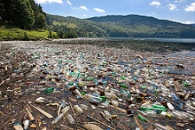
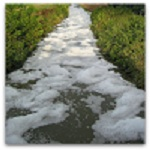

Smog
Smog is a dangerous air pollution that damages Earth's ozone layer. Smog is pervasive in urban areas, and places where there are a lot of motor vehicles. Smog is created by vehicle emissions, factories and aerosol products. It makes the air dirty, and has been linked to people developing allergies and respiratory problems.
Litter
{kind=link}
Litter is garbage that has not been put in its place. It turns beautiful landscapes ugly, and some types of litter are dangerous to wildlife. Stray plastic bags, six-pack holders and aluminum cans are not only unappealing to the eye, they can cause animals to choke or injure themselves.
Water Pollution
{kind=link}
If waste leaks into a water system, it could have dangerous effects on the things that live in the water or consume it. This will not only damage the cleanliness of the water, but will often make the water smell bad too. The most common causes of water pollution are sewage treatment plants, factories, underground mines, agriculture and oil spills.
Deforestation
When humans cut down natural forests, it greatly disturbs the habitats of any animals that lived in that forest. In some cases, deforestation has resulted in the extinction of certain species. Deforestation results in an enhanced greenhouse effect, which causes severe damage to Earth's atmosphere. There is also a decline in biodiversity because of deforestation.
Global Warming
This is a popular environmental problem, especially in politics. Former United States Vice President Al Gore's film, "An Inconvenient Truth," was about the dangers of global warming. There has been much debate over the severity of global warming, but environmentalists are persistent about its dangers. Environmentalists state that ocean levels will rise as polar ice caps melt, further crowding an already crowded planet.